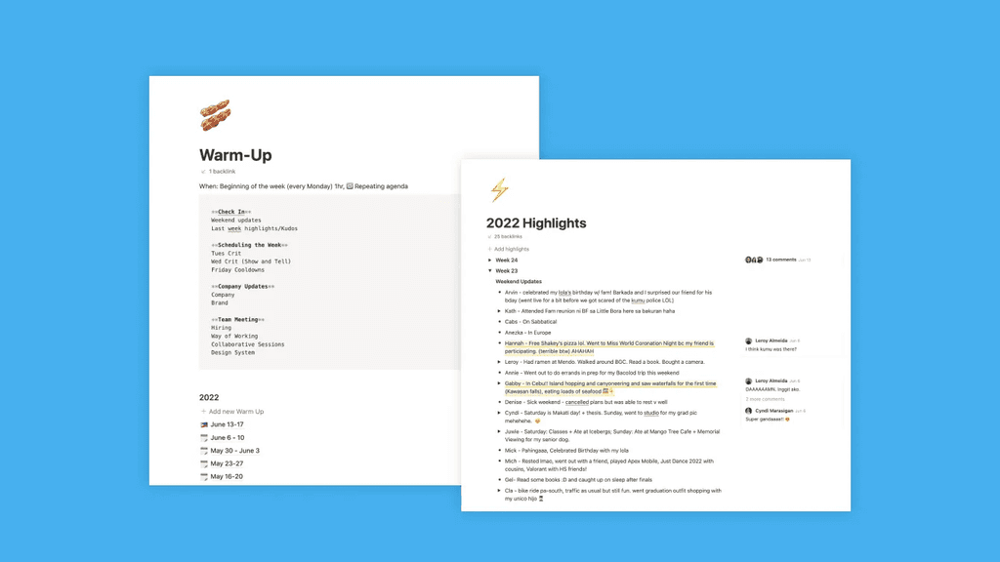
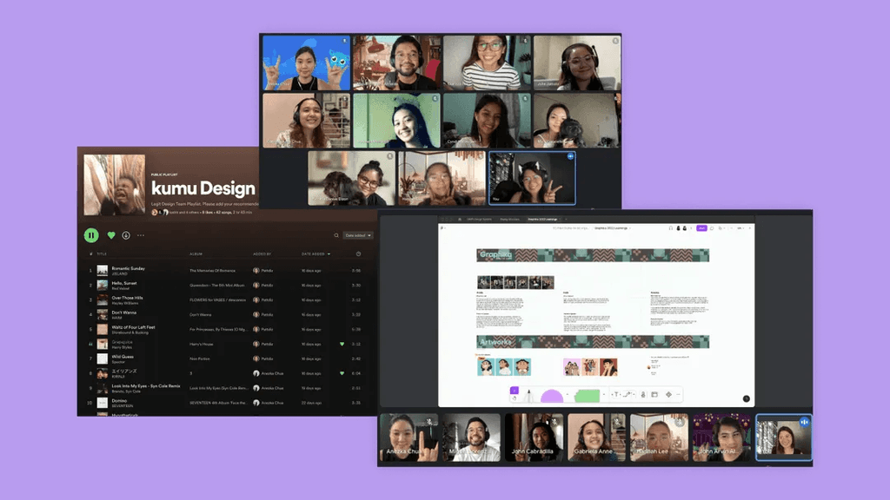
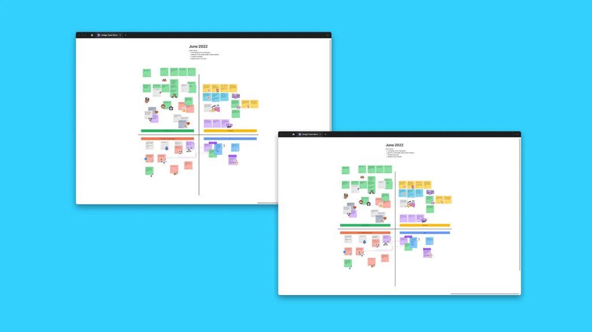
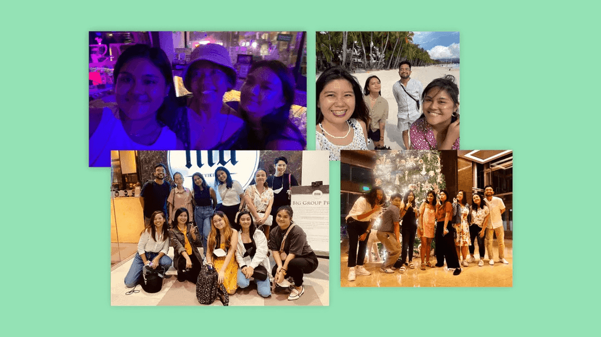

← Home
Inside Kumu: The Product Design Team's Process
A look at the meetings, rituals, and exercises our product design team
relies on to build trust and stay efficient

There are a few things every design team needs to be effective. Two of
the most essential are trust and communication.
This is a deeper dive into the Kumu Product Design team’s day-to-day,
meeting cadences, rituals, and anything else that helped build that
trust within the design team and has helped us stay connected and
efficient.
But first, some quick caveats:
-
Kumu is a remote-first company. The design team
works fully remotely. Hence, most of our processes will be weighted
towards keeping us efficient and effective (and sane) in our remote
way of working.
-
This is about the “design team” process, not the “product team”
process.
Kumu product designers are members of the “design team” (horizontal)
and the “product team” or, as we call it, a “pod” (vertical). The
horizontal team is responsible for maintaining consistency across
the product and keeping a high-quality bar, elevating the craft of
design in the company. The vertical team is responsible for shipping
and delivering product improvements and building expertise within
focused areas.
Daily Rituals
"Stand-up" or Status Updates
- Who: Product designers
-
What: Each designer sends a list of things they
worked on yesterday and are working on today
- When: Every Tuesday to Friday, 9:30 am
-
Why: To be aware of what others are working on and
if they are blocked and need help
This is the only daily ritual we have. We used to have this as a
15-min call to hear updates from everyone but, as we’ve grown in
number, this took up too much time and was inefficient. So far,
sending updates via Slack has helped. This ritual allows everyone to
keep tabs on what everyone is doing or has done over the week (or past
few weeks).

Weekly Rituals
Warm-Up
- Who: Product designers
- What: Kick off the week together
- When: Every Monday, 1:00–2:00 pm
-
Why: To ease into the work week with something
light and fun
Every Monday, we kick off the week together. The hour-long meeting
consists of four parts:
-
Weekend update (15 minutes): We each go around the
room and share a quick highlight or two of what we did over the
weekend (if we’re using Google Meet, one person starts and then
nominates the next person). It helps us start the week on a positive
note and allows us to ease into the workweek.
-
Tasks and Blockers (15 minutes): We look at our
kanban board and discuss the statuses/progress of our tasks. This
also helps us see if any designer has a blocker or is overloaded and
needs help in the coming week.
-
Critique/meeting schedule (15 minutes): We plan our
critiques and team meetings in a Notion doc ahead of time so
everyone knows what to expect. We go around the room again (one
person starts and then nominates the next person) and each person
decides if they have a project they’d like critiqued during the
week.
-
Announcements (15 minutes): We share org-wide or
company-wide announcements and updates specific to the design team.
This includes topics like branding alignments with the brand team,
updates to the design system, new company policies, hiring plans,
and designer candidate progress.
Design Critique
-
Who: Product designers, and any guests the
presenter chooses to invite (e.g., their PM, tech lead, researcher)
-
What: Run through a list of designs submitted for
Critique on Tuesday
- When: Every Wednesday from 10:30–12:00 pm
-
Why: To move projects along, help anyone who gets
stuck, and share context with the team
Design critiques at Kumu are not product reviews. Critiques are not
the forum to suggest new ideas, make major product decisions, or
determine product roadmaps. It is a safe space for feedback
independent from roadmap decision-making. Our design critiques focus
on unblocking problems and generating ideas, elevating the quality of
the designs, encouraging consistency in the product, and sharing
context.
Cooldown
- Who: Product designers
- What: Wrap up the week
- When: Every Friday 4:00–5:00 pm
- Why: To hang out and relax
In remote settings where water-cooler conversations are hard to come
by, time to hang out needs to be carved out actively. Cooldowns are
our time to bond and have fun as a team—both important to building
trust in each other.
We would usually do one of three things here: Play,
Learn, or Chat.

Monthly and Quarterly Rituals
Retrospectives
- Who: Product designers
-
What: An opportunity to review our current
processes and team-wide responsibilities
- When: Twice a month, every other Thursday
-
Why: To create a space for feedback on our design
processes or our team
Offsites
- Who: Product designers (and interns)
-
What: A full day of activities outside the office
- When: Quarterly
- Why: To learn, bond, and (maybe) brainstorm
We have two types of teambuilding offsites: one with the Design team
and one with the product teams.
